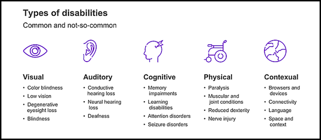

Maria Ermolaeva
The power of the Web is in its universality.
Access by everyone regardless of disability is an essential aspect.
Tim Berners-Lee, W3C Director and inventor of the World Wide Web
apx. 1.3 billion people – or 16% of the global population
+ situational and temporal disablility: car-driving or broken arm etc.
Across the one million home pages, 50.829.406 distinct accessibility errors were detected—
an average of 50.8 errors per page.
The WebAIM Million: The 2022 report on the accessibility of the top 1,000,000 home pages
imgThumb.onmouseover = showImg;
imgThumb.onmouseout = hideImg;
imgThumb.onfocus = showImg;
imgThumb.onblur = hideImg;
.hidden-element {
position:absolute;
left:-10000px;
top:auto;
width:1px;
height:1px;
overflow:hidden;
}
@media (prefers-reduced-motion: reduce) {
button {
animation: none;
}
}
Always favor semantic HTML elements where possible
Details and patterns on ARIA